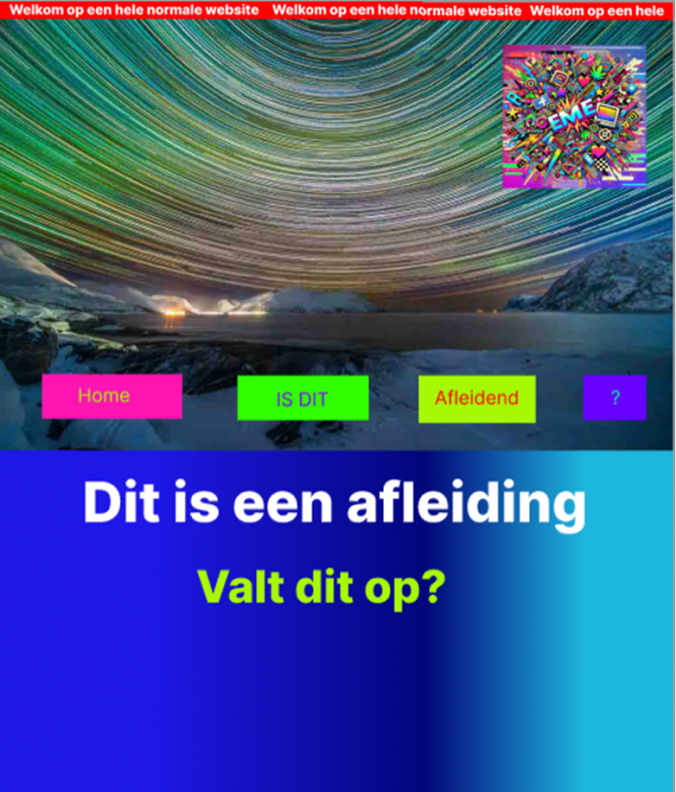

Logo's Boris
Voor het designproces ben ik begonnen met het ontwerpen van meerdere logo’s voor Boris. In het begin was het even zoeken naar de juiste aanpak, maar na een aantal pogingen ging het steeds beter. Hieronder zijn de logo’s te zien, grotendeels in de volgorde waarin ik ze heb gemaakt. In afbeelding hiernaast staan de eerste logo’s die ik heb ontworpen. Bram gaf mij als tip om de naam ‘Boris Schmidt’ meerdere keren in blokletters onder elkaar te schrijven en telkens iets kleins aan te passen, zoals het toevoegen van een vorm of het inkleuren van een letter.
Ik ben ook gaan experimenteren met het weghalen van vormen uit letters. Zo ontdekte ik een interessant patroon in de letter R, dat ik vervolgens inkleurde en roteerde. Bram gaf als feedback dat dit een effectieve manier is om een logo te ontwikkelen. Ik ben hiermee verdergegaan en ben gaan zoeken naar abstracte vormen die ik uit zijn naam of initialen kon halen. Hiernaast zijn een aantal van deze experimenten te zien.
Ik heb verschillende variaties ontworpen op basis van de letters B en S. Hierbij heb ik geëxperimenteerd met kleurgebruik en ben ik gaan spelen met de vormen van de letters. Voor één ontwerp heb ik me laten inspireren door het logo van Avicii, dat bestaat uit gestileerde driehoeken die de letters A en V voorstellen.
Vanuit dat concept ben ik gaan nadenken over hoe ik dit kon toepassen op Boris’ initialen. Ik kwam zo op een stijl met dunne, strakke lijnen en rechte vormen. Enkele van deze ontwerpen zijn hieronder te zien.
Vervolgens ben ik gaan experimenteren met stijlen die beter aansluiten bij de techno- en hardrockscene. Ik gebruikte scherpere vormen en liet me inspireren door voorbeelden van logo’s uit deze genres. De resultaten van deze experimenten zijn hieronder te zien.
Thijs, een groepsgenoot, had een interessant logoconcept gemaakt. Ik haalde hier inspiratie uit, vooral uit het gebruik van golvende lijnen. In de eerste afbeelding hieronder is het originele ontwerp van Thijs te zien. De tweede afbeelding toont mijn eigen interpretatie ervan: ik heb het logo sterk uitvergroot, waardoor vooral de lijnen zichtbaar blijven. Bram gaf feedback dat dit abstracte, eenvoudige logo erg krachtig is. Wel gaf hij aan dat de vage tekst en het duidelijke, strakke logo visueel niet goed bij elkaar passen.
Feedback van Bram over de logo's
Het is goed dat ik heb geëxperimenteerd met lettervormen en de mogelijkheden daarin, zoals het visueel uithalen van vormen.
UX project prototype
Voor het UX project heb ik alleen of samen met mijn groepje iteraties van het prototype
Prototype Cognitief (eigen)
Mijn concept start met een visueel overweldigende pagina vol animaties en felle kleuren. Dit bootst de ervaring na van iemand met ADHD die wordt geconfronteerd met teveel prikkels. Onder aan de pagina staat een onopvallende knop die leidt naar een tweede, rustige pagina met de vraag: "Was de vorige pagina overweldigend?" Vervolgens wordt visueel uitgelegd hoe zelfs mooie animaties voor afleiding kunnen zorgen, en waarom het belangrijk is om bewust om te gaan met animaties in ontwerp.
Prototype Motorisch (eigen)
De gebruiker doorloopt een mini-game waarin alleen genavigeerd kan worden met tab, shift-tab en enter. In de eerste versie zijn elementen slecht benoemd of visueel onduidelijk. Dit frustreert de gebruiker, die zich niet kan oriënteren. Daarna volgt een verbeterde versie met duidelijke focusindicatie en logische volgorde. De test maakt bewust wat het belang is van toegankelijke navigatie. Hieronder staat mijn process.


Feedback sprint 1 Carolina:
- De huisjes-opdracht werkte goed, maar zou realistischer zijn als simulatie
- Het typen onder tijdsdruk gaf goed de beperking weer
- Het idee om gebruikers gefrustreerd te maken en vervolgens empathie op te roepen, werd als sterk ervaren
- Carolina vond het leuk dat het verwerkt was als game
Maken van een nieuw prototype (samen met mijn groepje)
Naar aanleiding van de feedback bedachten we een herkenbare setting: een website voor een fictieve luchtvaartmaatschappij "Cardan Airlines", waarbij bewust fouten zijn ingebouwd (slechte kleurencontrasten, veel afleiding, enz.). Mijn taak was de detailpagina van een vakantie te ontwerpen.
De link naar de Figma met de iteratiesMaken van een nieuw prototype
De Figma-prototype is getest via het Think Aloud-protocol met Noortje. Zij gaf aan dat sommige uitleg te lang was, waardoor ze instructies miste en niet verder kon. Dit wordt meegenomen in verdere iteraties.
Eindfeedback Carolina
Carolina vond het concept sterk, maar we hadden onszelf onnodig veel opgelegd. Het verwerken van alle beperkingen was niet nodig geweest. Ook gaf ze aan dat de instructies korter en duidelijker konden.
Portfolio
Ik had gekozen om te gaan werken met de kleur groen. Sinds dat ik deze kleur heel mooi vind en ik vind dat deze kleur het beste bij mij past. Ook vond ik de stijl Cottagecore heel mooi. Deze stijl vond ik goed te combineren met groen. Ook het gebruik van planten vond ik mooi.
De inspiratie voor mijn portfolio:

Hierop heb ik een paar versies gemaakt. Deze staan hieronder


Feedback Bram
Bram vond mijn designs goed. Hij zei wel dat ik meer mocht varieren met bv. kleuren en wanneer ik gebruik maak van verschil in tekst grootte ik dit met volle overtuiging moet doen. Zo gaf hij als tip om gebruik te maken van een kleurenpallet. Daarnaast gaf hij een uitleg in de klas over rasterpunten. Dat wanneer je een tekst op de rasterpunten zet het minder saai is voor het oog.
Iteraties van homepagina
Hierin laat ik al mijn verschillende versies zien van de homepagina. Ook staat erbij hoe ik op het design ben gekomen.

Gegenereerde afbeeldingen en button
Hierbij heb ik gebruik gemaakt van een call-to-action button, want deze miste ik op de pagina. Door die button lijkt het minder leeg. Daarnaast was ik niet zo fan van een foto van mezelf in het portfolio dus heb ik gekozen voor een AI gegenereerde afbeelding. In deze afbeelding is een meisje met bruin haar te zien, dit moet mij voorstellen.
Andere kleuren
Nadat ik deze designs had gemaakt dacht ik dat ik ook een variatie wou maken met kleuren
die
ik nooit zou kiezen. Zo heb ik gekozen voor een kleurenpallet van zwart, wit, grijs en
oranje.
Bij de eerst heb ik de planten oranje gemaakt zodat die goed opvallen. Bij de tweede heb ik het weggelaten zodat het zo neutraal is. Ik vind het niet mooier dan de ander, maar wel mooi om te zien hoe het eruit ziet met andere kleuren.
Iteraties van projectpagina
Hierin laat ik al mijn verschillende versies zien van de projectpagina. Ook staat erbij hoe ik op het design ben gekomen.
Iteraties van Leeruitkomstenpagina
Hierin laat ik al mijn verschillende versies zien van de leeruitkomstenpagina. Ook staat erbij hoe ik op het design ben gekomen.
Development project
In het vervolg op de eerdere opdracht, het ontwerpen van een interactieve UX-ervaring rond de vijf fysieke stations van Cardan. Onze opdracht is het daadwerkelijk bouwen van deze digitale webapplicatie. We vertalen het gemaakte UX-ontwerp naar werkende code.
Orginele designs van Jarvins groep

Feedback van Carolina UX-project
Op auditieve na vond ze het heel leuk dat er een duidelijke opdracht is die de gebruiker moet doen. Bij auditieve zit er geen opdracht aan vast wat het minder sterk maakt en de gebruiker niet goed weet wat ze hier moeten doen. Daarnaast zitten de twee stukjes, opdracht en uitleg heel dicht op elkaar gepropt. Hiermee kan je goed variëren en kijken of het wel echt nodig is. Ook zou een soort van welkom pagina en eindpagina goed zijn om te hebben. Dan komt de gebruiker niet gelijk in de ervaring van een beperking.
Veranderingen na feedback
Toevoeging van een welkomstscherm en afsluitend scherm. Visuele en inhoudelijke herindeling van uitleg en opdracht.
Belangrijkste veranderingen na ux test
Links staat het oude design en rechts het nieuwe design, onderaan staat de uitleg:


De knop “ik heb de oproep gehoord” is niet duidelijk. (Gehoord hoeft niet verstaan te zijn)
De tekst op de button veranderen naar iets minder verwarrend, namelijk verder


Het doel van de auditieve beperking is nu de vraag goed beantwoorden, maar het gaat daar om het ervaren
Bij antwoorden een “geen idee” button toevoegen. Bij fout antwoord feedback een “niet opnieuw proberen


Vraag van cognitief sluit niet aan bij de doelgroep.
Veranderen naar een vraag die in het leven van de doelgroep zou kunnen voorkomen
Bij cognitief moeten gebruikers nadenken over wat ze gaan invullen
Informatie te geven over wat ze in moeten vullen

Bij dyslexie simulatie moeilijk te lezen font toevoegen
Font family toevoegen zoals bijvoorbeeld: Comic Sans
Eindpresentatie
Als afsluiting hebben we een showcasevideo gemaakt (door Jarvin), waarin de werking van de website wordt getoond:
Iteraties Project X
Schetsen
Hier leg ik mijn proces uit van eerste schets tot het vereenvoudigen van het ontwerp in Blender.
Het bouwen in Blender bleek lastiger dan gedacht. Het kosten best veel tijd om elk object te maken. Na overleg met mijn coach besloot ik het ontwerp te vereenvoudigen en me te focussen op het interactieve gedeelte. Mijn doel is om het interactief te maken en niet om uitgebreid een mooie ontwerp te maken. Ik ben nu van plan om het bed weg te laten en de kamer kleiner te maken. van het perfecte design.
Versie 1
Ik heb de grootste voorwerpen gemaakt. Alle decoratieve voorwerpen wil ik als laatste maken. Het design staat hieronder. Links zonder kleur en rechts met kleur.

Ik ben vooral gaan experimenteren met het maken van voorwerpen en het ontdekken van de tools. Als eerste maakte ik een kast, met simpele vormen die makkelijk te bouwen waren. Ik vind dat het er tot nu toe goed uitziet en ik ben best trots dat ik dit zelf heb gemaakt. Toch is dit niet de stijl waar ik voor wil gaan. Deze versie lijkt vrij realistisch, terwijl ik juist iets ‘schattigers’ wil maken. Ik heb ChatGPT gevraagd waarom mijn ontwerp niet zo schattig oogt als mijn inspiratie. De tip was dat mijn ontwerp realistischer is en dat de inspiratie vooral schattig lijkt door ronde vormen en onrealistische verhoudingen. Dat ga ik in mijn volgende versie proberen toe te passen.
Versie 2
Ik wou mijn design verbeteren door meer gebruik maken van onrealische meubels en objecten. Ik begon bijna helemaal opnieuw met het design. Zo ben ik weer begonnen met een schets te maken in Blender. Hieronder staat de nieuwe schets.

Zoals je kun zien heb ik de vormen groter gemaakt. Ook heb ik het raam veranderd dat die wat groter is
Uitgewerkte schets
Ik merkte al snel dat ik steeds beter met Blender kon werken. Een object maken koste steeds minder tijd. Doordat het maken sneller ging had ik meer tijd om meer objecten te maken en ze mooier te maken. De versie hieronder is nog niet mijn complete ontwerp van versie 2. Ik ben nog bezig met de stoel verder te ontwerpen. Het ontwerp staat hieronder.

Nadat ik de stoel heb aangepast ga ik het exporteren en in three.js zetten. Zodat ik kan beginnen aan de functies. Mocht ik daarna nog tijd over hebben ga ik meer decoratie maken.
Eindproduct
Bekijk hieronder de showcasevideo van de laatste versie die ik heb opgeleverd voor de deadline van mijn portfolio.
Ontdek de 3D-website zelf via de knop hieronder. Benieuwd of er iets is veranderd? Kijk gerust rond!
Live website